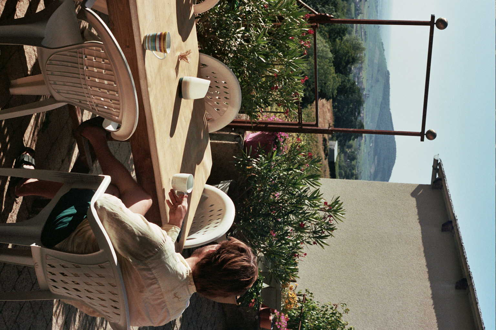
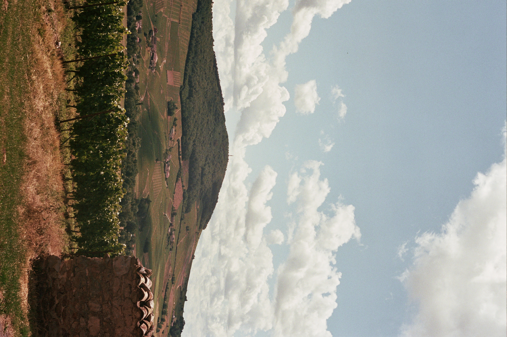
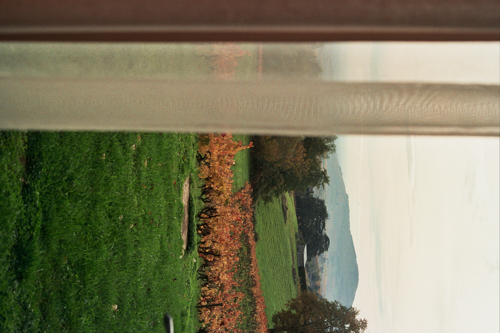

Mont Brouilly
Toen kunstenares Etel Adnan de vraag kreeg wie de belangrijkste persoon is die ze ooit ontmoette, antwoordde ze: “een berg”.
Ik beeld me altijd in hoe hier 200 miljoen jaar geleden nog een zee lag en hoe zich op de bodem laag na laag schelpen, kalk en resten van zeedieren ophoopten die later zouden verharden tot het bleke gesteente dat vandaag te zien is tussen de wijnranken.
Telkens wanneer ik terugkeer naar de Beaujolais, is Mont Brouilly de eerste die mij groet. Het voelt alsof ik een oude vriend weerzie, en na een lange, uitputtende rit lijkt mijn vermoeidheid langzaam te verdwijnen en word ik opgewekt.
Door het raam waar ik verblijf, zie ik de berg constant. Ik word wakker en hij is al het eerste ochtendzon aan het opnemen, ik ga gaan slapen en zie een donkere silhouet, wakend in de nacht.
Iedere keer dat ik Mont Brouilly aanschouw, is hij anders. In de ochtend valt de schaduw op een andere manier dan wanneer de zon in de middag hoog boven hem staat. In de avond, wanneer de zon ondergaat, is hij op een bepaald moment nog de enige die belicht wordt, terwijl de vallei al volledig in de schaduw is verdwenen. In de herfst draagt hij donker oranjebruine en rode kleuren. In de winter is hij kaal en vaak verscholen achter mist- en nevellagen. In de lente bloeit hij weer op, om in de zomer bijna volledig in het groen gekleed te zijn
Ik denk aan een Japanse samourai die schreef:
“Each time I see Fuji It appears changed And I feel I view it Even for the first time ”
Ik heb het gevoel dat iets gelijkaardigs Paul Cézanne dreef. Gedurende zijn hele leven schilderde hij meer dan zeventig keer Mont Sainte-Victoire, de berg die hij vanuit zijn atelier kon zien, telkens op een andere manier. Het lijkt alsof hij de essentie van de berg probeerde vast te leggen, maar dat die hem telkens weer ontglipte. Elke keer dat hij hem schildert, is hij in zekere zin alweer veranderd. Cezanne toont dat je een berg nooit twee keer op dezelfde manier ziet.


